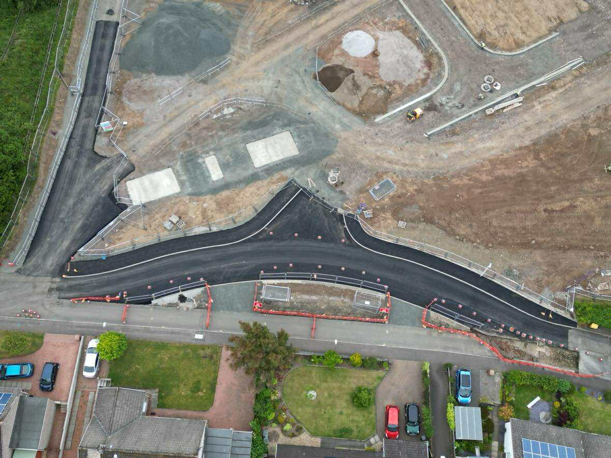
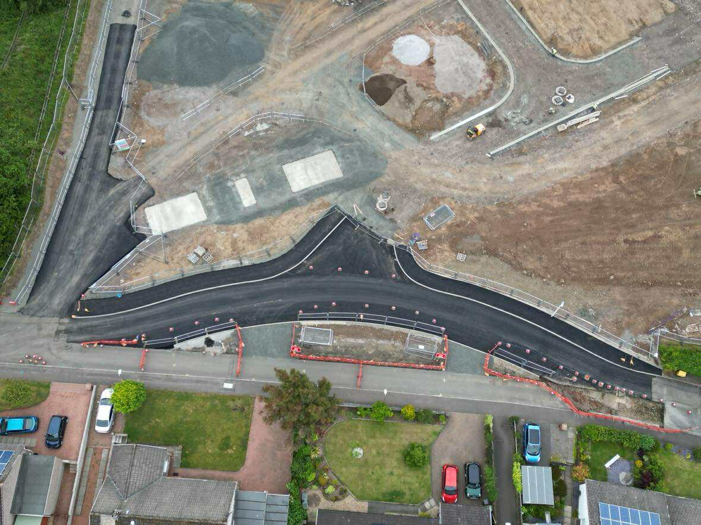

Expert Groundwork Services
Groundworks are the foundation of any successful construction project, and at Paton Construction Ltd, we understand the importance of getting it right. Our experienced team specializes in comprehensive groundworks solutions, from initial site preparation to final foundation work.
Our Expertise
- Complete groundworks packages for new builds
- Professional site preparation and assessment
- Foundation design and installation
- Sustainable drainage solutions (SuDS)
- Commercial and residential developments
- Infrastructure and utility installations

 
